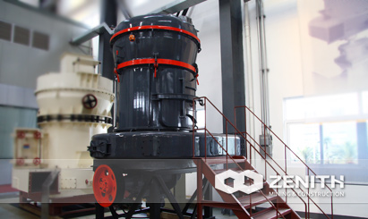
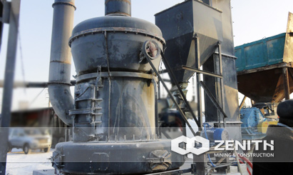
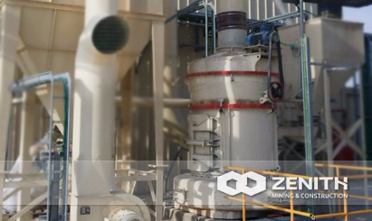
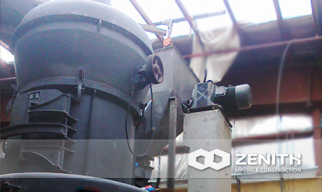

- 
- 
- 
- 
MTW Trapezium Mill
MTW Series trapezium mill is the latest grinding mill, which is developed by our company's experts based on 10 years' R&D on grinding machine. It owns many independent patents property, such as overall prick gear drive, internal thin oil lubrication system, arc-shaped air duct. All of these make it leading the trend of the milling industry in the world.
Application of MTW Trapezium Mill
The MTW Trapezium Mill is ideal machine for grinding barite, limestone, mica, talcum, quartz, calcite, granite, porcelain clay, basalt, gypsum, gold, iron ore, bauxite, copper, cement, coal etc. So it has wide application in powder making industry of construction, mining and paper-making and so on.
MTW Trapezium Mill Benefits and advantages
- Exquisite appearance.
- The whole bevel gear transmission.
- Internal thin oil lubrication system.
- curved duct.
- Curved surface shovel with exchangable blade.
- Isolated cyclone collector.
- No resistance inlet volute (small observation door without vortex).
The tacnology data
| Name & Model | MTW110 | MTW138 | MTW175 | |
|---|---|---|---|---|
| Ring Roller Number(pcs) | 4 | 4 | 5 | |
| Major diameter of roller(mm) | Ф360×190 | Ф460×240 | Ф520×280 | |
| Inner diameter of roller (mm) | Ф1100×190 | Ф1380×240 | Φ1750×280 | |
| Revolving Speed(rmin) | 120 | 96 | 75 | |
| Revolving Speed(rmin) | <30 | <35 | <40 | |
| Final size(mm) | 1.6-0.045, fineness can reach to 0.038 |
1.6-0.045, fineness can reach to 0.038 |
1.6-0.045, fineness can reach to 0.038 |
|
| Capacity(th) | 3.5-10 | 6.5-15 | 13-20 | |
| Overall dimension(mm) | 8625×7933×8642 | 10920×9470×10227 | 12275×9555×9916 | |
| Main unit motor | Model | Y280M-6 | Y315M-6 | Y355M2-8 |
| Power(kw) | 55 | 90 | 160 | |
| Rotate Speed(rmin) | 980 | 990 | 740 | |
| Classifier speed regulating motor (variable frequency motor) | Model | Y132M-4 | Y180M-4 | Y200L-4 |
| Power(kw) | 7.5 | 18.5 | 30 | |
| Rotate Speed(rmin) | 1440 | 1470 | 1470 | |
| Centrifugal induced draft fan motor |
Model | Y250M-4 | Y315-4 | Y315L2-4 |
| Power(kw) | 55 | 110 | 200 | |
| Rotate Speed(rmin) | 1480 | 1480 | 1480 | |
| Elevator |
Bucket Model | TH210 | TH315 | TH315 |
| Motor Model | Y100L2-4 | Y112M-4 | Y112M-4 | |
| Motor Power(kw) | 3 | 3 | 4 | |
| Rotate Speed(rmin) | 1430 | 1430 | 1440 | |
| Jaw Crusher | Model | PE250×400 | PE250×750 | PE250×750 |
| Motor Model | Y180L-6 | Y200L2-6 | Y200L2-6 | |
| Power(kw) | 15 | 22 | 22 | |
| Rotate Speed(rmin) | 970 | 970 | 970 | |
| Magnetic Vibrating Feeder | Model | GZ2F | GZ3F | GZ4F |
| Power(kw) | 0.15 | 0.2 | 0.45 | |